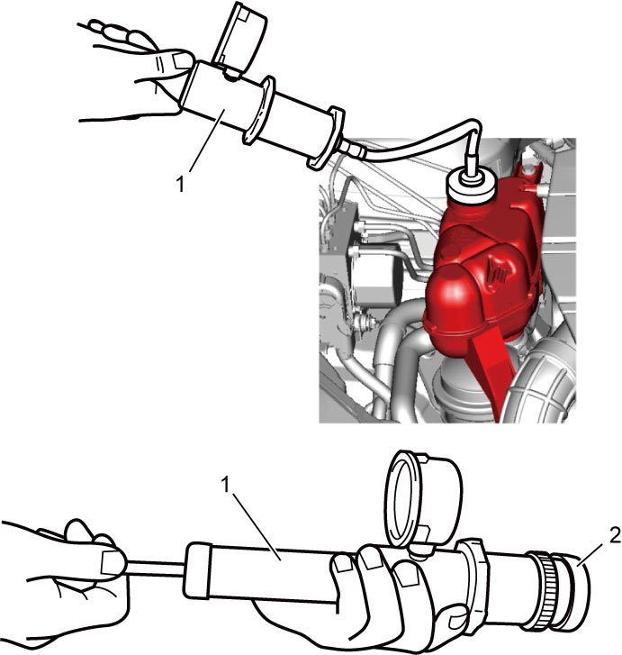

1F
| Engine Cooling System Inspection |
Before performing the following procedure, observe Precautions for Cooling System:D16AA.
Check cooling system as follows.
1)Check cooling system for leakage or damage.
2)Remove degassing tank cap when engine is cold.
3)Check coolant for proper level and freeze protection.
4)Using a pressure tester (1), check system and degassing tank cap (2) for proper pressure holding performance.
If replacement of cap is required, use a proper cap for this vehicle.

If replacement of cap is required, use a proper cap for this vehicle.
Cooling system holding pressure
155 kPa (1.6 kgf/cm², 22.5 psi)
Degassing tank cap holding pressure
140 – 155 kPa (1.4 – 1.6 kgf/cm², 20.3 – 22.5 psi)

 "Expand image")
5)Install degassing tank cap to degassing tank turning it clockwise to stop.
6)Tighten hose clamps and check all hoses. Replace hoses if they are cracked, swollen or otherwise deteriorated.
7)Clean frontal area of radiator core.